Constructing contour flanges
You can construct a feature with multiple bends and flats using an open profile with the Contour Flange command.
In the synchronous environment, you can construct a contour flange along a linear edge.
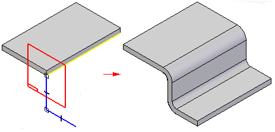
In the ordered environment, you can also construct the contour flange along a curve.
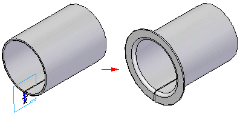
When creating a contour flange along a curve, you can create a small flange with two parallel side faces,
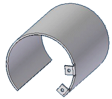
and the side faces will remain parallel when you create a flat pattern.
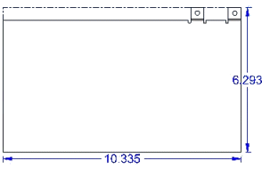
To do this, you must set the Miter on Start End and Finish End options on the Miters and Corners tab of the Contour Flange dialog box, and set both Miter Angles to 0.0.
You can also use the command to create a tab by drawing a single line segment.
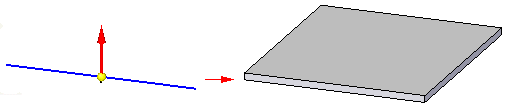
Constructing contour flanges on an existing contour flange
When working in the ordered environment you can construct a contour flange on an existing contour flange.
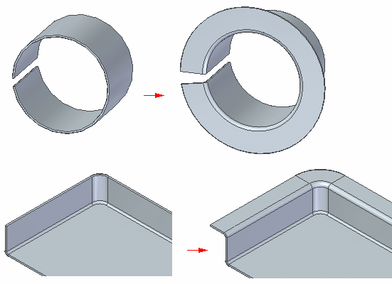
Contour flange types
Simple contour flanges
A simple contour flange is created when a sketch is used to create the first feature in the sheet metal file.
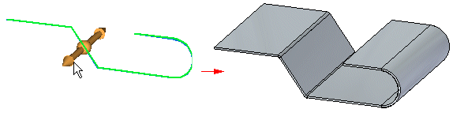
When a simple contour flange is created in the synchronous environment, it contains a set of tabs and bends that have no relationship to one another. The simple contour flange is represented in PathFinder as a collection of tabs and flanges.
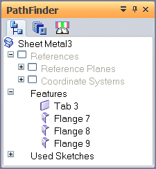
When a simple contour flange is created in the ordered environment, it is represented in PathFinder as a contour flange..
Chained contour flanges
A chained contour flange is created when a sketch is used to add a contour flange to an existing tab or flange. The sketch must be perpendicular to the thickness face to which it is attached.
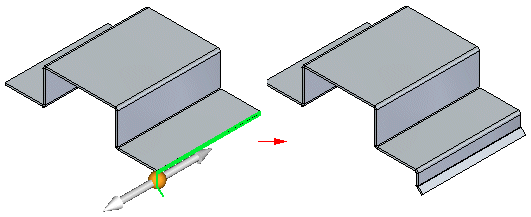
Chained contour flanges create matched rows of flanges.
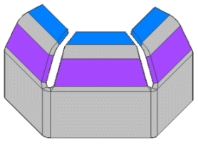
Each flange creates a new set of bends,
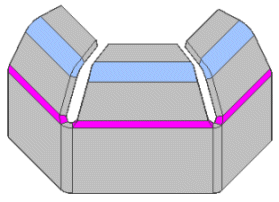
and the flange angle is consistent across all the flanges in the row.
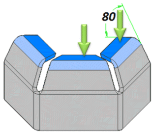
The elements making up the contour flange are associative so that bend angle, bend radius, and direction between flanges are always maintained. In other words, if you change the bend angle, all flanges in the contour flange update to reflect the change.
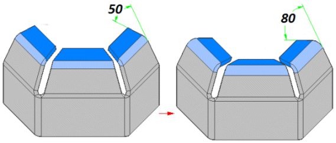
Each plate in the contour flange is treated like an instance of a pattern. Any changes to a bend or plate in the contour flange are applied to all members in the flange.
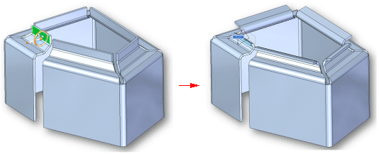
Drawing profiles for contour flanges in the ordered environment
When drawing a profile for a contour flange, the profile must be a single, open profile. All line segments and arcs in the profile must be large enough to create the bend in the flange. If a line segment or arc is too small to create a bend, an error icon is displayed adjacent to the contour flange entry in PathFinder. If you pause the cursor over the contour flange entry, a tool tip displays an explanation of the error.
When using arcs in the profile, all line-to-arc and arc-to-arc relationships must be tangent. If they are not, the Profile Error Assistant dialog box displays an error message.
When drawing a profile, set the Orient The Window To The Selected Plane on the General tab of the Options dialog box to make it easier to visualize the profile geometry.
Constructing wrapped features in the ordered environment
In the ordered environment, you can also use the Contour Flange command to construct features that are wrapped around a cylinder, like in parts made by rolling perforated material.
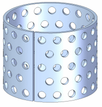
To construct a wrapped feature, use a profile arc that has an included angle of slightly less than 360 degrees. There must be a slight gap where the ends of the rolled material meet, or else the part will not unbend. Keep this in mind when defining the material side for the contour flange. Make sure the material thickness does not cause the gap to close.
After you have constructed the contour flange, you can unroll it using the Unbend command. You can add features, such as a pattern of holes, to the flattened part, then use the Rebend command to re-roll the part. Then you can fill the small gap by adding a protrusion in the Part environment.
If you need to produce both rolled and flattened drawings of the part, you should close the gap by inserting a copy of the part in a Part document, then adding a protrusion to the copy.
You can also construct parts where the cylindrical portion is solid by combining the rolled sheet metal part with a cylindrical part constructed in the Part environment. Use the following workflow:
-
Construct a shaft in the Part environment using the Extrude command.
-
Construct a rolled sheet metal part.
-
Place both parts in an assembly document.
Use the Part Copy command to place the assembly into another part document as an associative part (this combines the two parts in the assembly into one part).
Mitering contour flanges
You can miter the ends of a contour flange by setting options on the Miters and Corners tab of the Contour Flange Options dialog box. For example, when constructing two contour flanges that will overlap, you can miter the ends where the flanges meet.
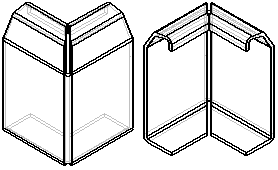
You can specify which ends of the contour flange you want to miter, the miter angle, and what face the miter angle is constructed relative to.
You can also miter edges that have a bend radius larger than the default bend radius (A).
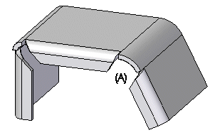
To do this:
-
On the Miters and Corners tab of the Contour Flange Options dialog box, set the Miter Bend Edges That Are Larger Than Default Bend Radius option.
-
On the Contour Flange command bar, make sure the Select option is set to Chain, and select the edges.
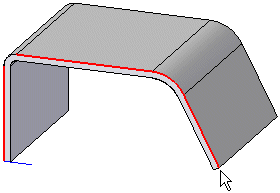
-
On the Contour Flange command bar, change the Select option to Edge, hold the <Ctrl> key, and click the edge to deselect it.
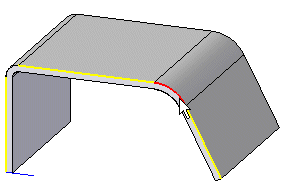
-
Click the Accept button and the flange is created and the large bend is mitered.
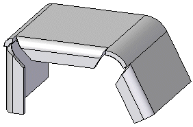
Partial flanges
You can use the Partial Flange option to create a partial contour flange.
You can select a direction to drag the partial flange,
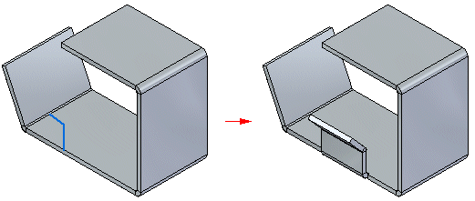
or use the Symmetric Option to construct the flange symmetrically around the sketch.
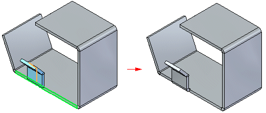
Closing three bend corners
In the synchronous environment, if you want to use the Close 3 Bend command to close a contour flange, it is imperative that corner relief be applied to the contour flange. To apply the corner relief, select the Corner Relief option on the General tab of the Contour Flange Options dialog box when creating the flange. In the following example, no corner relief has been applied to the contour flange.
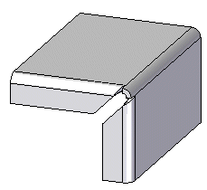
Attempting to close this corner with the Close 3 Bend command will fail.
The following example illustrates the same contour flange with corner relief applied.
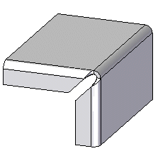
You can use the Close 3 Bend Corner command to successfully close this corner.
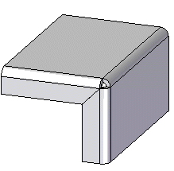
Chaining contour flanges
You can construct contour flanges that wrap around corners or bends. This is especially useful when constructing parts where you need to miter the internal faces of the flange, but calculating the miter angle is difficult. When you use the chain option, the miter angle is calculated automatically, and will update if the part changes.
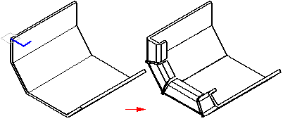
A contour flange tutorial is available to assist you in learning how to use this command.